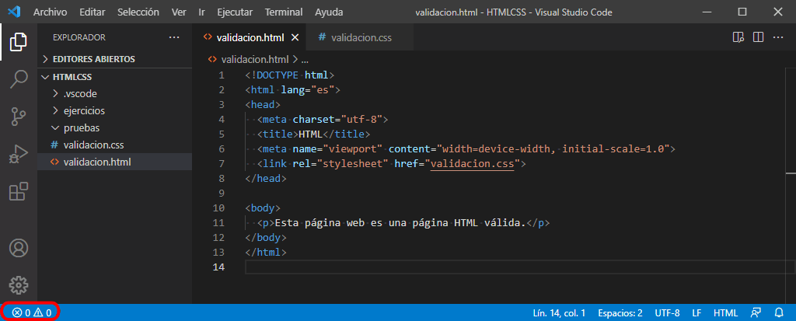
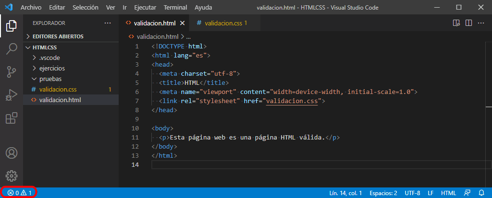
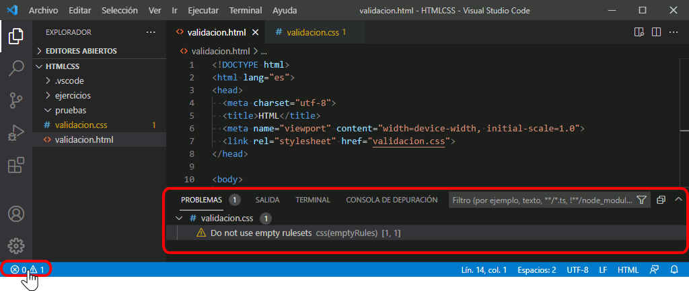
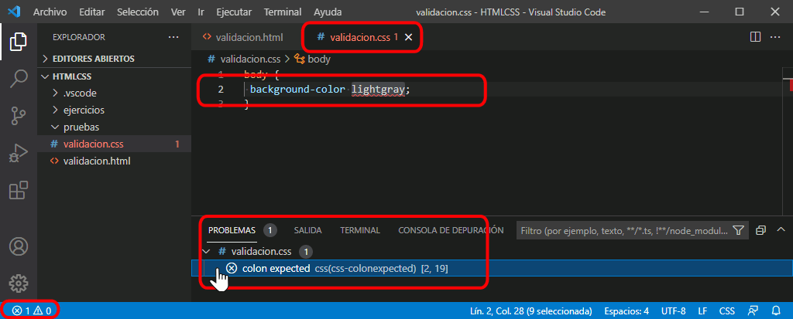
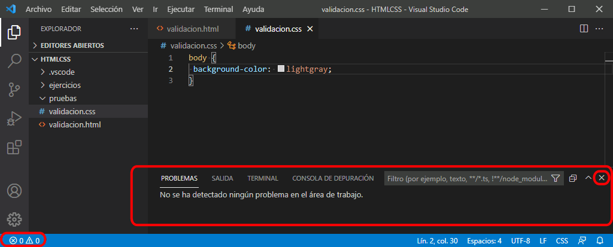

Visual Studio Code no realiza validaciones completas de las páginas web ni de las hojas de estilo, pero puede ayudar a corregir algunos errores en estos archivos.
Interfaz de validación en Visual Studio Code
En la barra lateral se muestran dos iconos y acompañados de dos números que corresponden al número de problemas detectados por Visual Studio Code en los archivos abiertos. Visual Studio Code distingue entre errores y advertencias (en inglés, warnings), según la gravedad del problema detectado. El número de errores se muestra junto al icono . El número de advertencias se muestra junto al icono . También se pueden instalar extensiones que detectan más tipos de problemas, como se explica más adelante en esta lección.

Si Visual Studio Code detecta un problema (errores o advertencias), se muestra un valor distinto de cero.

Haga clic en los iconos para abrir el panel, que mostrará los errores detectados, ordenados por ficheros.

Haga clic en el error para mostrar en el editor el documento correspondiente y la línea en la que se ha identificado el problema. Tenga en cuenta que Visual Studio Code muestra la línea en la que ha identificado el problema, pero el origen del problema puede estar en esa línea o en una línea anterior.
Las advertencias corresponden a avisos de todo tipo, que en general se aconseja corregir, pero que a menudo no impiden que el documento se muestre correctamente. Por ejemplo, la captura siguiente muestra un aviso que corresponde a una mala práctica (en este caso, el dejar reglas vacías en la hoja de estilo), pero que no provoca ningún problema real.
Los errores corresponden generalmente a errores de sintaxis que deben corregirse para que el documento sea válido y se pueda mostrar correctamente. A veces un error provoca que Visual Studio Code detecte más errores de los que realmente existen, por eso se aconseja resolver los problemas en orden, para que al corregir uno, desaparezcan los siguientes errores provocados por el anterior.

Cuando se corrigen los errores y avisos, la pestaña Problemas del panel indica que no hay problemas en los archivos abiertos. Puede cerrar el panel haciendo clic en los iconos de la barra lateral o en el icono en forma de cruz situado en la parte superior derecha del panel.

Validación de HTML en Visual Studio Code
Las páginas web se pueden validar en Visual Studio Code mediante la extensión HTMLHint. Esta extensión instala y utiliza el analizador de código estático HTMLHint. Este validador no detecta todos los posibles errores, pero sí los más importantes.
Los tipos de errores detectados de forma predeterminada por la extensión HTMLHint son los siguientes:
"attr-lowercase": los nombres de los atributos deben escribirse en minúsculas. Se puede indicar una lista excepciones (por ejemplo, algunos atributos de las etiquetas SVG)
"attr-no-duplication": los atributos no deben duplicarse
"attr-value-double-quotes": los valores de los atributos deben escribirse entre comillas dobles
"doctype-first": el documento debe incluir el preámbulo DOCTYPE
"id-unique": los atributos id no deben repetirse
"spec-char-escape": los caracteres especiales deben escribirse como entidades de carácter
"src-not-empty": los atributos que hacen referencia a un elemento externo (src, href, data) no deben ser vacíos
"tag-pair": las etiquetas deben cerrarse y estar correctamente anidadas
"tagname-lowercase": los nombres de las etiquetas deben escribirse en minúsculas
"title-require": el documento debe incluir el elemento <title> en <head>
Además, HTMLHint permite detectar otro tipos de errores (que están desactivados de forma predeterminada):
"alt-require": las imágenes deben incluir el atributo alt
"attr-unsafe-chars": los atributos no deben incluir caracteres "inseguros" [referencia: documentación de HTMLHint]
"attr-value-not-empty": los atributos deben tener establecido algún valor
"doctype-html5": el preámbulo DOCTYPE debe indicar el tipo html
"head-script-disabled": no deben utilizarse etiquetas <script> en <head>
"href-abs-or-rel": las direcciones deben ser absolutas (abs) o relativas (rel)
"id-class-ad-disabled": los valores de los atributos id y class no deben contener la palabra "ad" (que bloquean los bloqueadores de publicidad)
"id-class-value": los valores de los atributos id y class deben utilizar guiones bajos (underline), guiones (dash) o camelCase (hump)
"inline-script-disabled": los atributos no deben contener scripts
"inline-style-disabled": no se debe utilizar el atributo style
"space-tab-mixed-disabled": el sangrado debe contener únicamente espacios (space), cuatro espacios (space4) o tabuladores (tab)
"style-disabled": no se deben utilizar etiquetas <style>
"tag-self-close": las etiquetas vacías deben incluir el carácter final /
El valor de cada propiedad suele true (activada) o false (desactivada), salvo en los casos en que ofrece más posibilidades (en la explicación anterior los valores se han indicado entre paréntesis).
Notas:
Yo diría que la opción "attr-unsafe-chars" de HTMLHint no funciona en la extensión.
HTML-Hint dispone de una opción "empty-tag-not-self-closed" (las etiquetas vacías no deben incluir el carácter final) que no está disponible en la extensión. [referencia: issue 65 abierta por mí el 12/10/2019
Se puede modificar la configuración predeterminada de la extensión HTMLHint de dos maneras, detallando las opciones deseadas:
en el archivo de configuración settings.json (de usuario o de proyecto).
// Extensión HTMLHint
//
// HTMLHint: Options
// Opciones de configuración de HTMLHint
"htmlhint.options": {
// Aquí se escribirían las propiedades ...
},
//
//
creando un fichero .htmlhintrc en la raíz del proyecto de Visual Studio Code.
{
// Aquí se escribirían las propiedades ...
}
En ambos casos, sería necesario incluir las diez propiedades predeterminadas ya que dejan de aplicarse de manera predeterminada.
Validación de CSS en Visual Studio Code
Errores de sintaxis
Visual Studio Code detecta los errores de sintaxis en las hojas de estilo. Estos errores deben corregirse puesto que impiden que la hoja de estilo se interprete correctamente.
Consejos
Además, Visual Studio Code también incluye un validador de hojas de estilo basado parcialmente en CSS Lint que proporciona consejos que ayudan a mejorar las hojas de estilo.
En el archivo de Preferencias de configuración, Visual Studio Code permite especificar el tipo de mensaje mostrado al usuario para cada una de las reglas de validación disponibles:
Errores (errors). Los errores deben corregirse necesariamente, porque la hoja de estilo no puede interpretarse correctamente mientras contenga estos errores.
Avisos (warnings). Los avisos deben tomarse como lo que son: consejos, que en unos casos es conveniente seguir, pero en otros casos no, ya que puede haber motivos para estar en desacuerdo con ellos o pueden ser consejos pensados para hojas de estilo complejas, no hojas de estilo sencillas como las que se utilizan en este curso. A medida que el alumno vaya adquiriendo experiencia, podrá ir juzgando por sí mismo si seguir o no esos consejos.
Ignorar (ignore). Se ignora la regla y no se muestra ningún mensaje al usuario.
La configuración predeterminada de Visual Studio Code es la siguiente:
Errores ("error"):
Actualmente (octubre de 2021), los dos consejos que están configurados como errores no parecen funcionar correctamente, ya que parecen no generar nunca mensajes de error.
"css.lint.argumentsInColorFunction": Arguments in Color Function: Número de parámetros incorrecto
No sé cómo se puede provocar este error y no he encontrado información sobre él. El 21/10/2021 panteé una pregunta en StackOverflow: StackOverflow Question 69651379
"css.lint.hexColorLength": Hex Color Length: Los colores hexadecimales deben estar formados por tres o seis números hexadecimales.
Parece que este aviso no funciona, como se comenta en VSCode issue 81808.
Avisos ("warning")
"css.lint.emptyRules": Empty Rules: No use conjuntos de reglas vacíos.
"css.lint.fontFaceProperties": Font Face Properties: La regla "@font-face" debe definir las propiedades "src" y "font-family".
En los ejercicios de fuentes web propuestos en estos apuntes se utiliza una versión sencilla de la propiedad @font-face que sólo hace referencia a la fuente en formato WOFF y que cumple esta regla, por lo que Visual Studio Code no debería mostrar el aviso:
"css.lint.propertyIgnoredDueToDisplay": Property Ignored Due To Display: La propiedad se ignora a causa de la pantalla. Por ejemplo, con "display: inline", las propiedades "width", "height", "margin-top", "margin-bottom" y "float" no tienen ningún efecto.
En septiembre de 2020 se eliminó el código que implementaba esta regla [Issue 56907], por lo que el aviso no se muestra, independientemente de la configuración establecida. El 20/10/2021 abrí una VSCode Issue 135493 preguntando si no deberian eliminar la configuración css.lint.propertyIgnoredDueToDisplay.
"css.lint.unknownAtRules": Unknown At Rules: Regla At desconocida.
"css.lint.compatibleVendorPrefixes": Compatible Vendor Prefixes: Cuando use un prefijo específico del proveedor, compruebe que también haya incluido el resto de propiedades específicas del proveedor.
"css.lint.float": Float: Le recomendamos no usar "float". Los valores float producen CSS frágiles que pueden dañarse fácilmente si cambia cualquier aspecto del diseño.
CSS Lint desaconseja el uso de ids en los selectores porque no se pueden reutilizar en una misma página web y aconseja utilizar clases en su lugar.
En los ejercicios propuestos en estos apuntes no se hace caso de este consejo ya que los ejercicios lo que pretenden es ilustrar el uso del selector de IDs.
div#intro {
background-color: #E56F60;
}
Disallow IDs in selectors - Don't use IDs in selectors.
"css.lint.ieHack": IE Hack: Las modificaciones de IE solo son necesarias cuando se admite IE 7 y versiones anteriores.
"css.lint.important": Important: Evite usar !important. Es una indicación que la especificidad de todo el CSS se ha salido de control y debe ser refactorizada.
Cuando se utiliza una regla-arroba @import, el navegador descarga el archivo al que se hace referencia y se espera a que termine la descarga para continuar leyendo la hoja de estilo. Eso ralentiza la carga de la página completa, por lo que CSS Lint aconseja utilizar en su lugar un enlace <link> en la página web (en la hoja de estilo no haría falta escribir nada), ya que la descarga de varios ficheros sí que se gestiona en paralelo. Pero entonces la asignación de la fuente a los elementos se debe hacer también en la página web.
"css.validate": true, Habilita o deshabilita todas las validaciones
Referencias
VSCode Issue 135493: El 20/10/2021 abrí esta issue porque la configuración css.lint.propertyIgnoredDueToDisplay aparece en el fichero de configuración pero no hace nada. En la issue 56907 dice que en septiembre de 2020 eliminaron la comprobación, así que les pregunté si no deberian eliminar la configuración css.lint.propertyIgnoredDueToDisplay.
StackOverflow Question 69651379: El 20/10/2021 abrí esta pregunta en StackOverflow preguntado si alguien sabe cómo generar el error "css.lint.argumentsInColorFunction": "error".